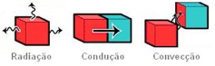
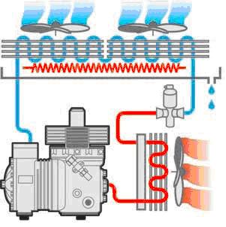
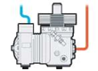
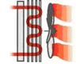
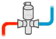
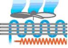
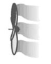

Como funciona...
Tanto a refrigeração industrial como o ar
condicionado, baseiam-se no mesmo mecanismo:
arrefecimento de uma substância. A instalação frigorífica
é composta por compressor, evaporador, ventilador,
condensador e componentes de controlo, constituindo
partes integrantes dos sistemas.
Não obstante existem diferenças substanciais nos
sistemas, nos componentes, nos métodos dos projectos e
nas estruturas comerciais, justificando assim estudos
separados.
A refrigeração é um processo pelo qual ocorre a redução
da temperatura dos fluidos ou corpos em geral, e é
utilizada na conservação temporária de mercadoria
deteriorável mediante a redução forçada da temperatura.
No caso de a temperatura chegar a ser inferior a ponto de
congelamento, falamos então de congelação.
A conservação de alimentos divide-se em:
- Refrigeração se o alimento for conservado por pouco tempo (0c / +7c).
- Congelamento, sub-congelamento, liofilização (freeze drying) se o alimento conservado por um longo período.
No sub-congelamento o produto deve alcançar os -18 ºC em menos de quatros horas, no entanto, para o congelamento o produto pode alcançar os -18 ºC em mais de 4 horas. Durante a liofilização o produto é dissecado e seguido de uma evaporação forçada do componente liquido do produto.
Na indústria alimentar a refrigeração é uma das aplicações mais delicadas e complexas, porque os alimentos necessitam de tratamentos em diversas temperaturas da fase de trabalho. A refrigeração diminui a proliferação das bactérias sobre os alimentos: a técnica baseia-se na acção extremamente rápida e intensa do frio que permite preservar intactas as propriedades orgânicas dos alimentos prolongando o tempo de conservação. Tanto os aparelhos projectados e instalados em escala industrial como os de largo consumo, baseia-se no procedimento e técnica padrão. O aparelho frigorífico é só uma parte de um sistema mais completo que permite ao evaporador definir a modificação térmica ideal e portanto a conservação dos alimentos.
Os principais dispositivos para a refrigeração utilizados principalmente na conservação dos alimentos são:
- Câmaras frigoríficas
- Câmaras de conservação
- Balcões
- Expositores refrigerados
A duração de conservação da maior parte dos produtos alimentares aumenta de acordo com seu armazenamento em baixa temperatura. Os principais alimentos que necessitam de conservação em baixa temperatura são: carne, peixe, fruta, verdura. Alguns alimentos como carne, peixe, pão, podem ser conservados também mediante o congelamento (temperatura que se compreende entre -20ºC e -30ºC), sem ocorrer substanciais variações.
Em alguns casos a refrigeração pode constituir uma das fases do processo de produção alimentar. Os principais alimentos que incorporam a refrigeração no seu processo são: os queijos, as bebidas (cerveja, vinho e sumos congelados) o pão e café solúvel.
A refrigeração deve ser compreendida como a transferência de calor em excesso de um lugar, para um outro, onde pode ser eliminado sem provocar danos ou desvantagens. O calor é transmitido espontaneamente de um corpo mais quente para um outro com temperatura inferior. O calor pode ser transmitido de três diferentes maneiras:
- Por radiação: forma de transmissão de calor por meio das ondas do tipo infravermelho;
- Por condução: forma de transmissão de calor através dos corpos sólidos, as moléculas do corpo transmite a própria energia térmica do ponto aquecido a todas as outras partes do corpo;
- Por convecção: forma de transmissão de calor do fluído (líquido ou gás), as moléculas do fluído no estado de agitação térmica migram por diferença de densidade através do ambiente em que o fluído é confinado, gerando movimento as zonas quentes sendo mais leves transportam o calor.

Estas duas últimas maneiras, em particular, são utilizadas quando se projecta unidades industriais.
Esta transferência é efectuada materialmente de um fluído refrigerante que circula dentro de um circuito apropriado, chamado circuito de refrigeração.
Um fluído refrigerante, deve consequentemente ter a propriedade de evaporar a temperatura e pressão reduzida, absorver o calor e ceder este calor que se condensa a uma temperatura e a uma pressão mais elevada. Este procedimento necessita de uma contribuição energética.
Distingue-se a acção do fluído refrigerante no circuito em duas fases:
- O fluído refrigerante absorve do ambiente adjacente uma determinada quantidade de calor e passa do estado líquido ao estado de vapor. Esta fase realiza-se a temperatura e pressão reduzida.
- O fluído refrigerante no estado de vapor cede o calor absorvido num outro ambiente que apresenta condições favoráveis. Em seguida a esta cedência de calor, o fluído refrigerante retorna ao estado líquido, e recomeça o ciclo descrito.
Na natureza as substâncias têm três estados, sólido, líquido e gasoso.
Adicionando calor a uma substância, mantendo a pressão invariável é possível mudar seu estado de sólido para líquido e de líquido para gasoso, diminuindo a temperatura pode-se obter o processo inverso (de gás para líquido, de líquido para sólido). Além disso, aumentando a pressão à temperatura constante é possível mudar o estado de uma substância de gasoso para líquido e de sólido para líquido, ao diminuí-la obtêm-se o processo inverso. O que determina a diferença de estado das substâncias é a distância relativa entre as moléculas. A água está presente na natureza em tudo e em três estados.
O compressor comprime o fluído refrigerante transformando-o em estado gasoso. No condensador o fluído refrigerante, sob forma de gás, condensa-se e torna-se líquido à alta pressão por dissipação do calor.
3. Subsequentemente, o fluído refrigerante na forma líquida à alta pressão flúi através da válvula de expansão (elemento de regulação). A válvula de expansão é um componente que está localizado entre o condensador e o evaporador e tem a função de efectuar uma forte queda de pressão. Esta válvula satisfaz a duas funções: primeiro permite dosear a quantidade de líquido refrigerante necessário no evaporador e além disso, gera também um diferencial de pressão indispensável à conclusão do ciclo.

O diferencial de pressão é muito importante num ciclo de refrigeração porque causa uma mudança do ponto de ebulição do gás. Sem esta mudança de pressão a refrigeração não aconteceria e o sistema seria apenas um simples recipiente do líquido refrigerante.
O fluído refrigerante na forma líquida ferve imediatamente e evapora, absorvendo calor. Este processo deixa o interior da câmara frigorífica frio. O fluído refrigerante sob forma gasosa é aspirado pelo compressor e o ciclo recomeça.
A relação entre a quantidade de calor criada no condensador e a quantidade de calor consumida no trabalho mecânico, ou seja, as quantidades de energia eléctrica consumidas para o funcionamento do compressor, são chamadas COP (Coefficient Of Performance - coeficiente de eficácia) e depende das temperaturas de condensação e da qualidade intrínseca da máquina. Se a pressão exercida na superfície de um corpo líquido for reduzida, este passará ao estado gasoso mais facilmente, requerendo neste caso uma quantidade menor de calor para evaporar. Por isso uma das primeiras etapas cumpridas no desenvolvimento dos sistemas de refrigeração foi encontrar o fluído cujo ponto de evaporação é mais baixo do que o da água. Esta característica foi encontrada nos chamados "líquidos refrigerantes".
Foi provado em âmbito internacional a nocividade dos CFC e de HCFC, (responsáveis pela destruição da camada de ozono, filtro natural dos raios ultravioletas) ao ponto que o protocolo de Montreal de 1992 decidiu proibi-los e interromper sua produção. Actualmente utilizam-se os refrigerantes do tipo HFC praticamente inócuos ao meio ambiente e também o amoníaco.
No segmento de refrigeração industrial, provavelmente, o congelamento e a conservação dos alimentos constituem as aplicações mais importantes por existir uma grande atenção voltada à segurança dos alimentos. Em todas as aplicações é fundamental assegurar o controle e a conservação das condições correctas de: Temperatura, Humidade e Velocidade do ar.
Além disso, é necessário calcular com precisão a carga térmica necessária par o produto armazenado. Este sector é diferente do ar condicionado e climatização pelas cargas de refrigeração e as potências em jogo, contudo os procedimentos para a produção do frio são os mesmos.
Os principais componentes de um sistema de refrigeração mecânica são:
Compressor; A sua função é de aspirar o gás super aquecido proveniente do evaporador e comprimi-lo em direcção ao condensador onde se tornará novamente líquido. O trabalho mecânico do compressor implica aumento da temperatura do gás.

Condensador; Absorve o calor do gás que evapora no evaporador (mais o calor de compressão) permitindo assim a condensação do mesmo. Nas instalações frigoríficas o condensador é constituído por tubos e por uma serpentina que contém o fluído refrigerante, e pode ser arrefecido por ar ou água.

Válvulas de expansão; Tem a função de baixar a pressão do gás proveniente do condensador (via depósito de liquido) de tal maneira que atinge o ponto de ebulição e consequentemente a temperatura de evaporação.

Evaporador; Acumula o gás líquido que chega do condensador através da válvula de expansão. Removendo o calor do ar que atravessa o evaporador, o líquido refrigerante evapora mantendo a pressão constante.

Ventiladores; São utilizados tanto para a ventilação interna, quanto para a externa. Na interna aspira o ar através do evaporador para depois distribuí-lo, refrigerando novamente o ambiente. Na externa tem a função de arrefecer o refrigerante forçando a circulação do ar através do condensador.

No interior de um circuito frigorífico o refrigerante é utilizado para absorver o calor de uma zona e transferi-lo a outra. É por isso importante optimizar a percentagem de transferência de calor. Para esta finalidade em geral é utilizado material com uma boa condutividade térmica como o cobre e o alumínio. Uma outra maneira de melhorar a transferência do calor é ampliar a superfície do condensador e do evaporador.
Os gases refrigerantes que circulam ao interior de um circuito frigorífico, seguem algumas leis físicas a fim assegurar as transformações que estes ocasionam no mesmo circuito.
De acordo com a lei de Boyle a pressão é inversamente proporcional ao volume. Ou seja, pressionando um gás com um pistão num recipiente, aumenta-se a pressão. Se a temperatura permanece constante, então, estas duas quantidades mudam de modo que Pressão x Volume = constante. Esta lei é aplicada no caso em que um gás suporta as transformações chamadas isotérmicas, ou seja à temperatura constante.
A formulação matemática da lei de Boyle é a seguinte:
- pv = Kt onde k é uma constante, ou seja
- Pressão x Volume = Constante x Temperatura.
A I lei de Gay Lussac, que afirma que o volume ocupado por uma certa quantidade de gás à temperatura constante, é inversamente proporcional à pressão, é aplicada no caso em que um gás suporta as transformações chamadas isobar, ou seja, à pressão constante.
A II lei de Gay Lussac, afirma que a pressão do gás é directamente proporcional ao aumento da temperatura quando o volume permanece constante, é aplicada no caso em que um gás suporta algumas transformações com o volume constante.
Não obstante, um gás (ou melhor, um fluído gasoso) pode suportar as transformações na qual nenhumas das três grandes características (t, v e p) permanecem constantes.